Culture Indian:Indian Monuments
Indian Monuments
With their elaborate superfluities and wonderful architecture, Indian monuments represent one of the most outstanding facets of the multi-faceted Indian culture. An architectural feat in itself, each Indian monument is a remarkably splendid sample of unbelievable artistry, covering a sense of mystery, deception and romance. Be it the marvel in white marble, the spellbinding Taj Mahal; or the red stone splendor, the magnificent Red Fort; or the magnificence of temple art of Khajuraho, Konark and Hampi , there is evident the master craftsmanship and elegance, that brings to the forefront the splendor of the bygone era. Monuments are witnesses of India's past; the monuments of India are also the guardian pillars of India's cultural heritage. The monuments of India have become an inspiration for the future generations.
Buland Darwaza
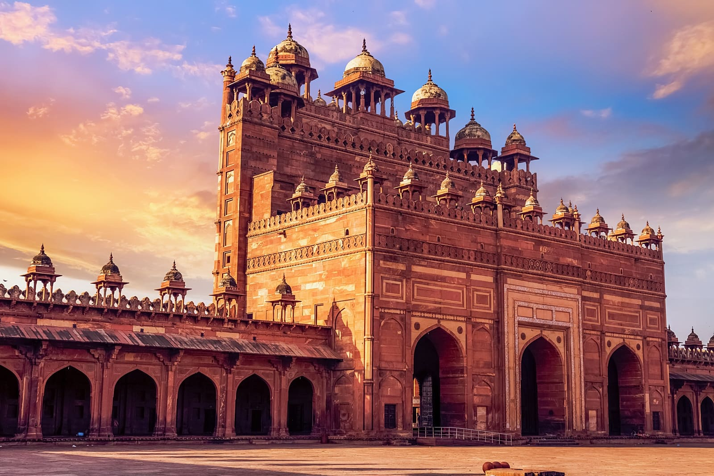Buland Darwaza or the loft gateway was built by the great Mughal emperor, Akbar in 1601 A.D. at Fatehpur Sikri. Akbar built the Buland Darwaza to commemorate his victory over Gujarat. The Buland Darwaza is approached by 42 steps. The Buland Darwaza is 53.63m high and 35 meters wide.
Char Minar
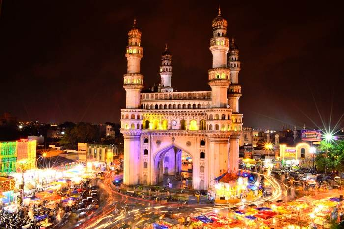The Charminar in Hyderabad was constructed in 1591 by Mohammed Quli Qutab Shah. He built the Charminar to mark the end of plague in the Hyderabad city. Since the construction of the Charminar, the Hyderabad city has almost become synonymous with the monument. The Charminar is a massive and impressive structure with four minarets.
Gateway of India
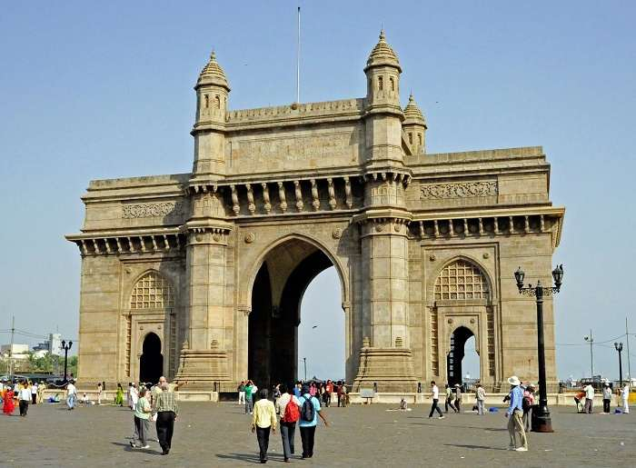 One of the grand and magnificent landmarks of Mumbai, the Gateway of India was built to commemorate the visit of the British Monarch, King George V and Queen Mary. The Gateway of India is one of the hot spots of Mumbai city. The Gateway of India is a massive archway on the Apollo Bunder.Gol Gumbad
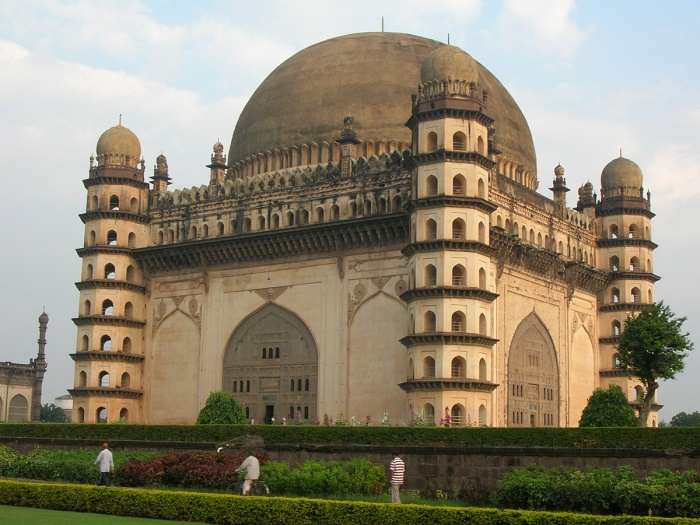Gol Gumbad situated in Bijapur district of Karnataka is the second largest dome in the world. The Gol Gumbad is second in size only to St. Peter's Basilica, Rome. The Gol Gumbad is 124 feet in diameter. The architecture of Gol Gumbad is unique in the sense that the four minarets themselves are the staircases, leading to the top dome.
Statue of Gomateswara
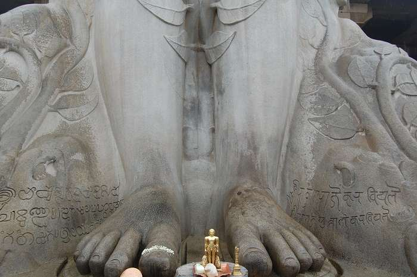The colossal monolithic statue of Gomateswara is situated at Sravanbelgola, 158 km away from Bangalore. This gigantic statue of lord Gomateswara, the Jain saint, is carved out of a single block of granite and stands majestically on top of a hill. For centuries, Sravanabelagola has remained a great Jain center and thousands of pilgrims flock to see the magnificent, gigantic statue of the Jain saint, Lord Gomateswara.
Hampi
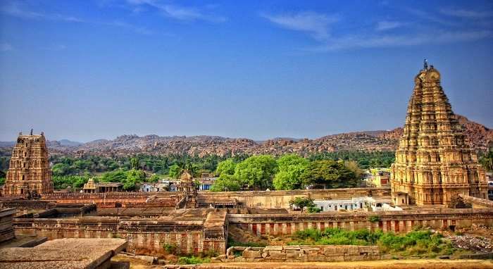Hampi was the capital of Vijayanagar Empire, the last great Hindu Kingdom. Under the Vijayanagar rulers Hampi grew fabulously. The princes of Vijayanagar built numerous Dravidian temples and palaces. The records of foreign travelers between 14th and 16th century bear testimony to the grandeur of Hampi.
Humayun Tomb

After wandering in wilderness for 25 years, Humayun reoccupied Delhi in the year 1555 AD but he was not destined to rule any longer and died barely six months of his arrival, from a fall in his library, Sher Mandal. Humayun's tomb was built by his widow, Hajji Begum around 1565 AD.
India Gate
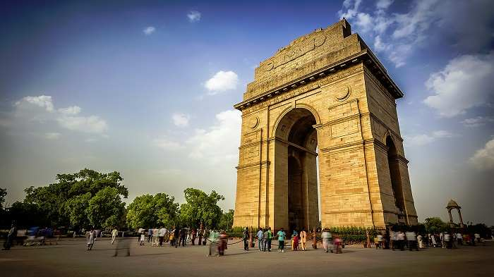India Gate, situated on the Raj Path in New Delhi, was built to memorialize the 70,000 Indian soldiers who lost their lives during the First World War, fighting for the British army. The India Gate also bears the name of 13,516 British and Indian soldiers killed during the third Afghanistan war, 1919. The foundation stone of India Gate was laid down by the Duke of Connaught in the year 1921 and was designed by the famous British architect, Edward Lutyens.
Jama Masjid Delhi
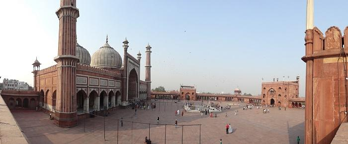Jama Masjid of Delhi is the largest mosque in India. The Jama Masjid stands across the road in front of the Red Fort. Built between 1644 and 1658, Jama Masjid is one of the last architectural works of the Mughal emperor Shah Jahan. The spacious courtyard of the Jama Masjid holds thousands of faithful.
Khajuraho Temples
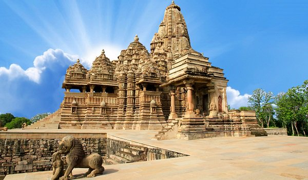Known for their breathtaking sculptors and elegance, the magnificent Khajuraho temples present aesthetics at its best. The beauty and elegance of the Khajuraho temples is beyond words and imagination. After visiting the Khajuraho temples one is left wondering about the advancement of Indian art and sculpture as back as the 10th century.
Mahabalipuram Rathas

Famous as temple town, Mahabalipuram is situated along the shores of the Bay of Bengal about 60 km from the south of Chennai. Mahabalipuram is home to one of the architectural wonders of the world, the Ratha temples. It was the Pallava king Narsimha, who built the magnificent 'Ratha' cave temples of Mahabalipuram in the 7th century.
Nalanda
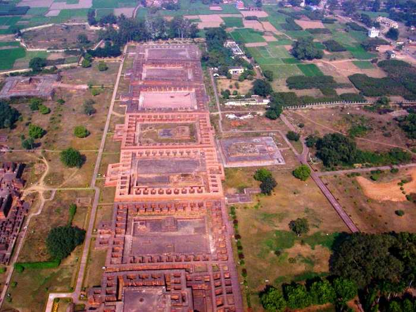Nalanda was a great center of Buddhist learning in ancient times. A large number of Buddhist students thronged the Nalanda University to study Buddhism. According to the Chinese traveler Hieun Tsang, the place owed its name to a Naga, who resided in a local tank. Lord Vardhamana Mahavir.
Qutub Minar
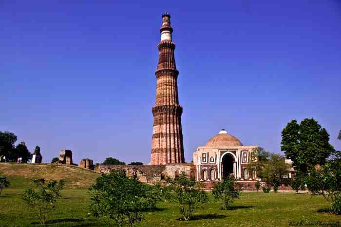Qutub Minar is the highest stone tower in India. The construction of the Qutub Minar was started by Qutub-ud-Din Aibak in 1199 and it was finished by his successor and son-in-law, Iltutmish. The Qutub Minar was named after the Sufi saint, Khwaja Qutubuddin Bakhtiyar Kaki.
Sanchi Stupa
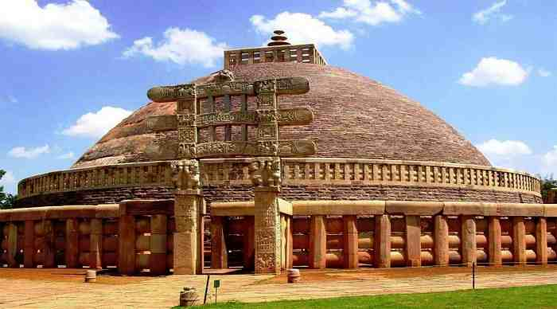Sanchi is famous for outstanding specimen of Buddhist art and architecture, belonging to the period between the third century BC and the twelfth century AD. The most important of all the Sanchi monuments is the Sanchi Stupa. Stupas are large hemispherical domes, containing a central chamber, in which the relics of the Buddha were placed.
Taj Mahal
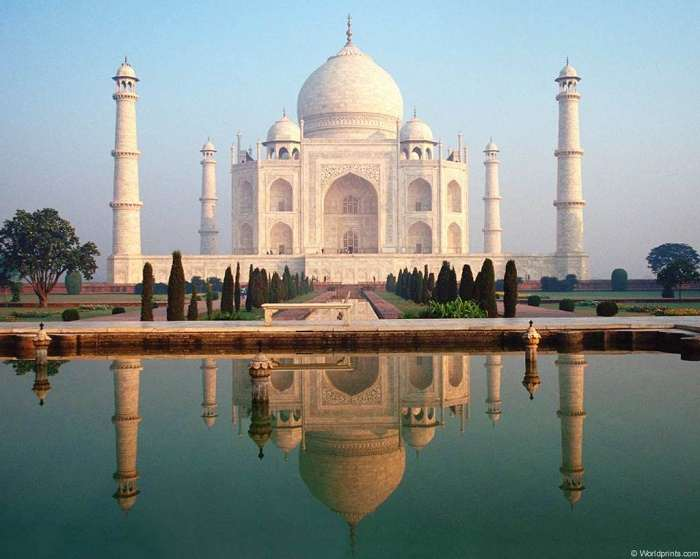Famous as one of the wonders, the Taj Mahal at Agra, India, is epitome of true love. Taj Mahal was built by the famous Mughal emperor Shah Jahan in the memory of his beloved wife, Mumtaj Mahal. The architectural beauty and magnificence of the Taj Mahal has never been surpassed.